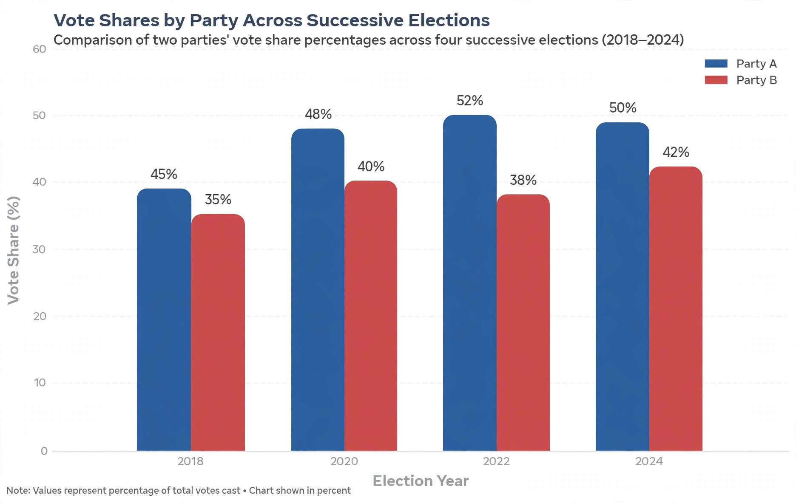

Swing in politics describes the fluctuation in voter support for a political party or candidate between elections. It is most often used in two-party systems to quantify the transfer of support from one major party to the other, and is a standard tool of psephology (the study of elections).

Bar chart comparing two parties' vote shares across successive elections.
The classic measure, devised in Britain by David Butler, expresses swing as the average of one party's percentage-point gain and the other party's percentage-point loss. If Party A rises from 40% to 45% (+5) while Party B falls from 50% to 43% (−7), the swing from B to A is (5 + 7) / 2 = 6 points. A uniform national swing assumption — that the same swing occurs in every constituency — was historically used to project seat outcomes from national vote shares, though modern analysts prefer more granular models.
A swing voter is a voter who is not firmly attached to one party and may switch allegiance between elections; such voters are disproportionately targeted by campaigns. A swing seat (or marginal seat; in the United States, a swing district, and at state level a swing state) is one held by a small margin that could plausibly change hands, and such constituencies typically receive the bulk of campaign spending and attention.
Butler, D. and Stokes, D., Political Change in Britain; standard psephological texts.